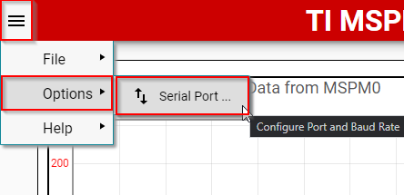
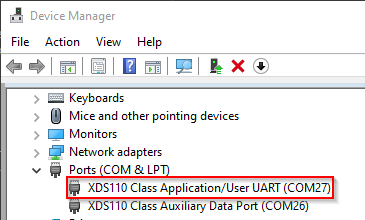

GUI Composer project examples showcase a UART based data exchange between a LaunchPad and customizable GUI application running on a PC. These GUIs can be fully customized by you to display, process data and control execution of firmware. These GUIs may also be installed into Code Composer Studio to augment standard debug displays and also provide a simplified user interface for non-expert manual testers.
This guide is intended to assist users in the initial setup and demonstration of running their first sample application.
This section will show how to import, build and load an example with one of the available GUIs.
3.1 Importing, Building, and Downloading the Code Example¶
Open your IDE of choice, and import one of the available GUI Composer code examples from the MSPM0 SDK. These examples can be found in <MSPM0_SDK_INSTALL_DIR>/examples/nortos/<MSPM0_LAUNCHPAD>/gui_composer.
Review the code example README for any specific configurations for the LaunchPad you are using.
Build and download the code example to the LaunchPad.
The GUIs for these examples can be started automatically from the TI Gallery by clicking one of the the links for the GUI below.
Please ensure to select the corresponding GUI for the code example that you are running on the LaunchPad. The correct GUI is specified in the code example README.
Configure the GUI settings to select the correct COM port and Baud Rate. Modify these settings by clicking on the menu icon in the top left corner, and then selecting Options > Serial Port.

The correct COM Port can be determined by opening your Device Manager, looking under Ports, and seeing which port is XDS110 Class Application/User UART.

Set the Baud Rate to 9600. This is the Baud Rate being used by default in the example.
Start running the example on the LaunchPad. If the LaunchPad and the GUI have been configured correctly, then the GUI will start updating with data automatically.
Please refer to the code example specific README for specific instructions on how to run the example.